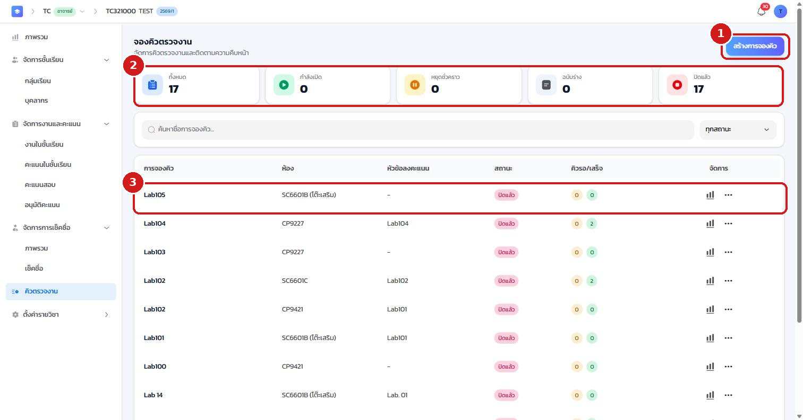
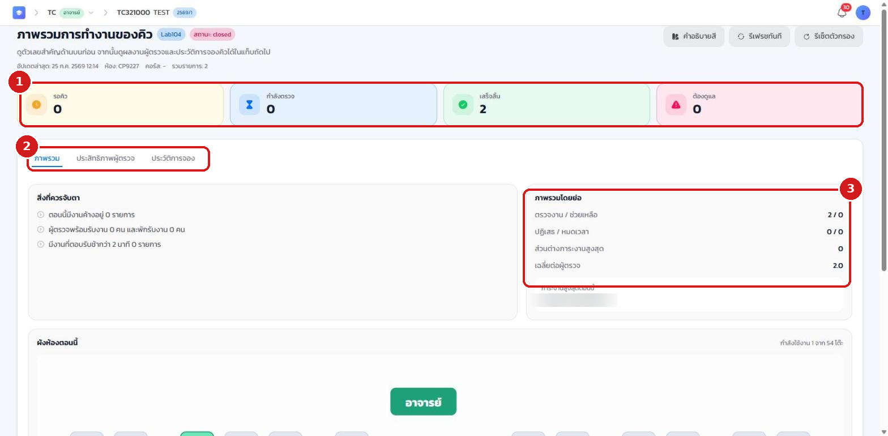

11.1 ภาพรวม#
ระบบคิวช่วยจัดลำดับการตรวจงานและการขอคำปรึกษาในห้องปฏิบัติการให้เป็นระเบียบและยุติธรรม นักศึกษาจองคิวผ่าน QR / PIN / โต๊ะ แล้วผู้ช่วยสอนเรียกตรวจตามลำดับผ่านหน้าจอผู้ตรวจ (Worker)
11.2 ดูและสร้างคิว#
- เข้าเมนู คิวตรวจงาน ระบบจะแสดงรายการรอบคิวทั้งหมด พร้อมปุ่ม สร้างการจองคิว
- แถบสรุปแสดงจำนวนรอบ ทั้งหมด / กำลังเปิด / หยุดชั่วคราว / ฉบับร่าง / ปิดแล้ว
- แต่ละแถวแสดงชื่อคิว ห้อง หัวข้อที่ลงคะแนน สถานะ และจำนวนคิวรอ/เสร็จ

11.3 สร้างการจองคิว#
เมื่อคลิก สร้างการจองคิว ระบบจะเปิดหน้าต่างให้กำหนดรายละเอียด
- กรอก ชื่อการจองคิว เช่น "ตรวจ Lab 1"
- เลือก ห้องที่ใช้งาน
- กำหนด การเชื่อมโยงกับหัวข้องาน เพื่อให้ระบบลงคะแนนอัตโนมัติเมื่อตรวจเสร็จ
- กำหนด การเชื่อมโยงกับการเช็คชื่อ หากไม่ต้องการให้นักศึกษาที่ขาดเรียนจองคิวได้
- คลิกปุ่ม สร้างการจองคิว

11.4 ติดตามและดูรายงานคิว#
คลิกไอคอน สถิติ ที่ท้ายแถวของรอบคิว เพื่อเปิด รายงานการทำงานของคิว
- ส่วนบนสรุปจำนวน รอคิว / กำลังตรวจ / เสร็จสิ้น / ต้องดูแล
- แท็บ ภาพรวม / ประสิทธิภาพผู้ตรวจ / ประวัติการจอง ใช้ดูข้อมูลในมุมต่าง ๆ
- ส่วน ภาพรวมโดยย่อ แสดงจำนวนงานตรวจ เวลาเฉลี่ยต่อผู้ตรวจ และภาระงานของผู้ช่วยสอนแต่ละคน

หลังจากสร้างและเปิดคิวแล้ว ท่านสามารถสั่งเริ่ม/หยุดชั่วคราว/ปิดคิว และปิดรับคิว (cutoff) ได้ ผู้ช่วยสอนจะเข้าทำงานที่หน้าจอผู้ตรวจ (Worker) เพื่อเรียกและตรวจงานตามลำดับ (ดูรายละเอียดหน้าจอผู้ตรวจได้ในบทที่ 16) และระบบยังรองรับจอโปรเจกเตอร์แสดงคิวปัจจุบันหน้าห้องด้วย